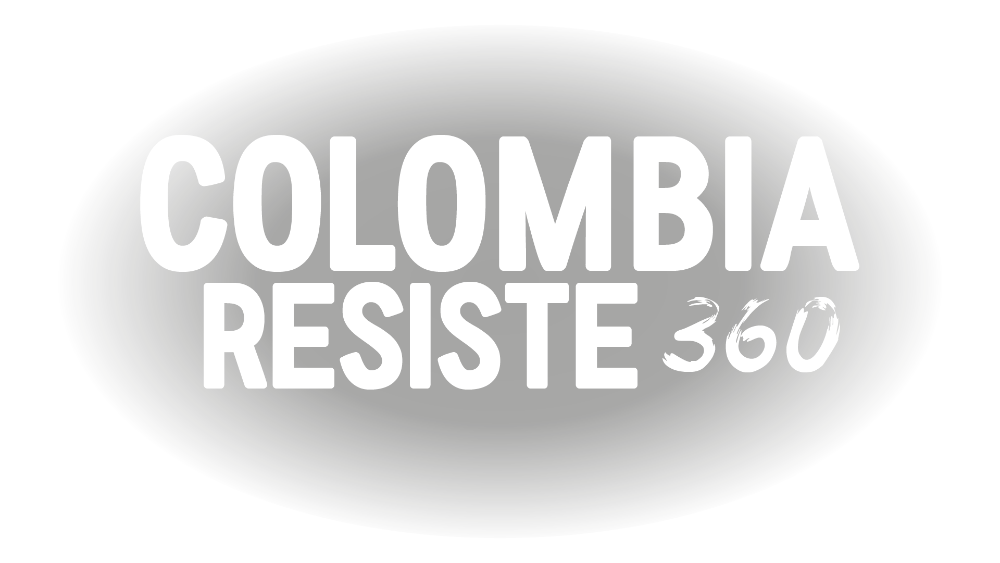
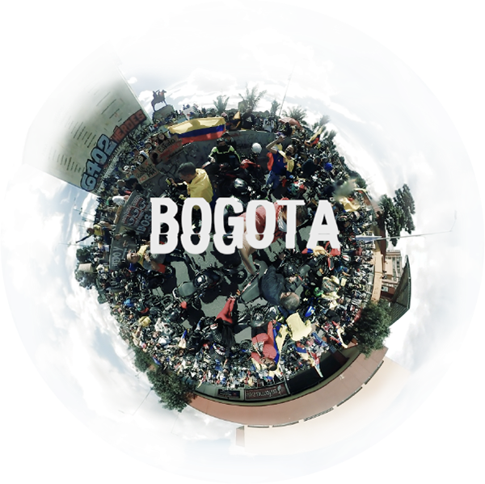
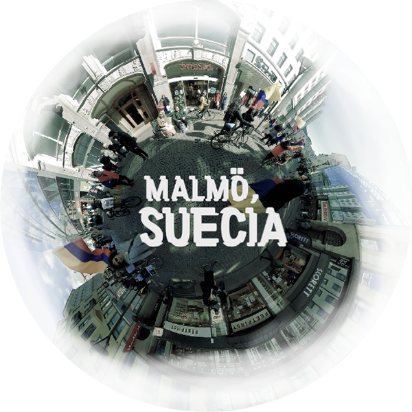
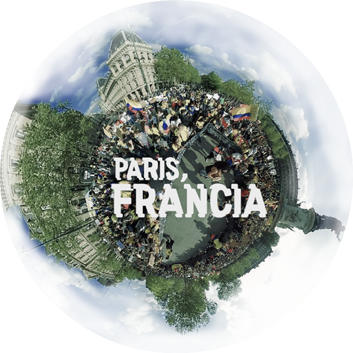
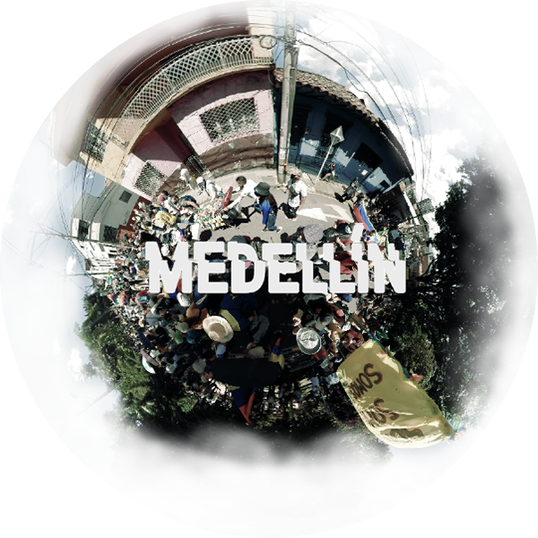
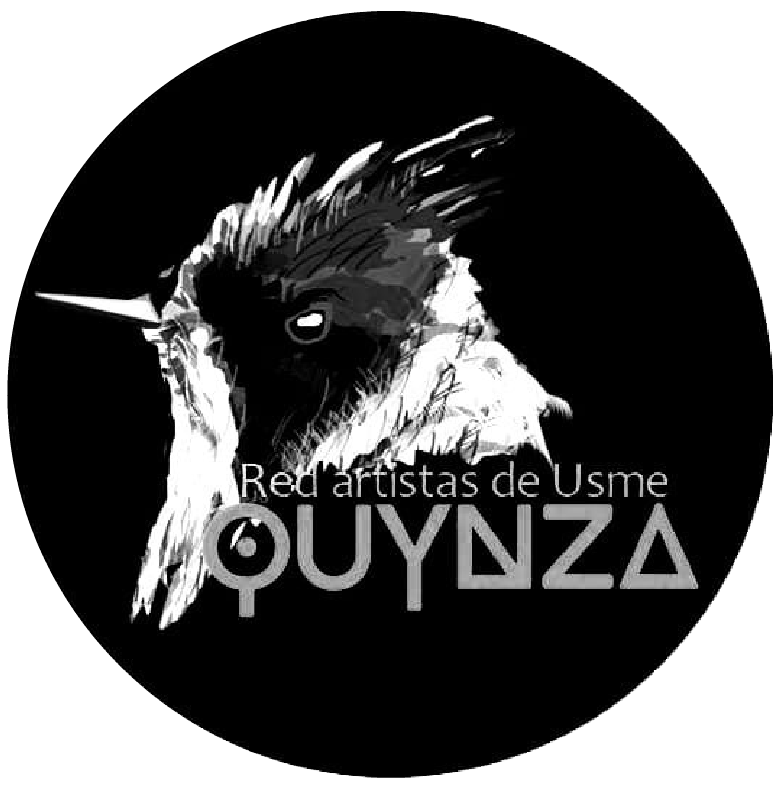

360° / Collaborative documentary
Colombia Resiste 360
Inside the protests
Colombia Resiste 360 is a collaborative immersive documentary that allows you to enter the heart of the protests of the national strike in Colombia.
The protests began as a voice against the new tax and health reforms, but they took an unexpected turn towards the defense of life amid brutal state repression and serious human rights violations.
We walk in a virtual environment for a real struggle of Colombians. The documentary offers an honest look at what people experience during long days of protest, which are loaded with cultural, musical and artistic expressions.
Cities that participate
Participating cities






